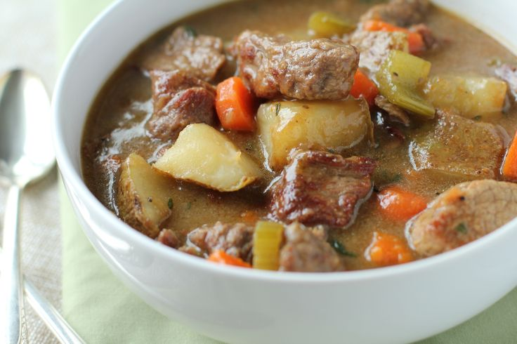

Home
Lapskaus (Norwegian Stew)

Image source: https://www.pinterest.com/pin/best-traditional-beef-stew-recipe-foodcom
Description: A comforting stew made with meat and root vegetables, perfect for cold days.
Ingredients:
- 500 g (1 lb) beef or lamb, diced
- 2 carrots, diced
- 2 potatoes, diced
- 1 onion, chopped
- 1 leek, sliced
- 1 liter (4 cups) beef broth
- Salt and pepper to taste
- Fresh parsley for garnish
Instructions:
- In a large pot, brown the meat in a little oil.
- Add onions and cook until soft.
- Add the broth, carrots, potatoes, and leek.
- Simmer for about 1.5 hours until the meat is tender.
- Season with salt and pepper. Garnish with fresh parsley before serving.